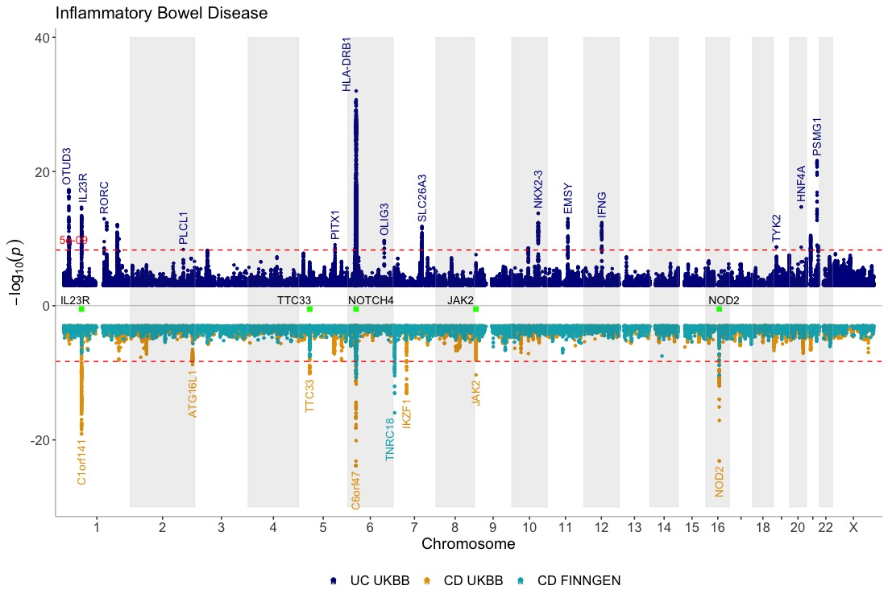
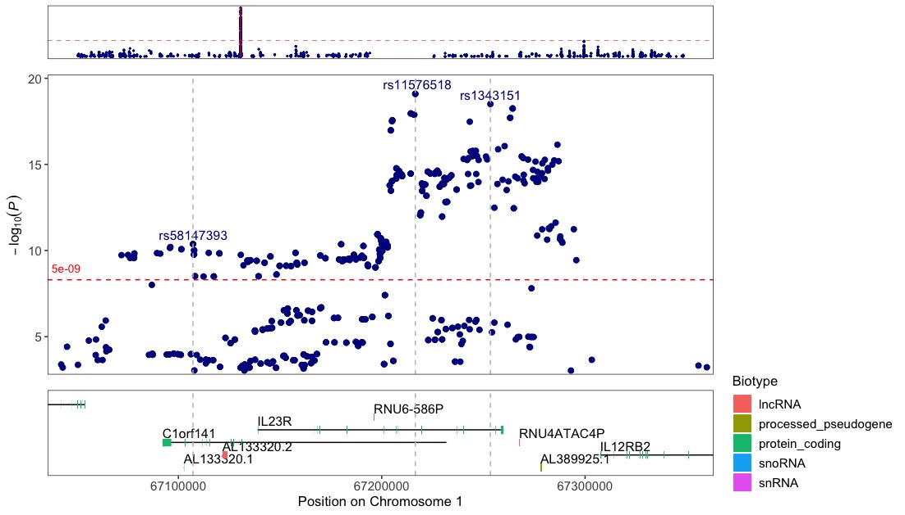

Intro into the topr package
Thorhildur Juliusdottir
Source:vignettes/input_dataset.rmd
input_dataset.rmd<–  –>
–>
Main features and functionalities of the topr packages are shown below.
See the function specific vignettes for more detailed examples for the manhattan and regionplot functions.
Example input datasets
topr comes with three example GWAS datasets, one on Ulcerative Colitis retrieved from the UKBB (UC_UKBB), and the other two on Crohn’s disease (CD_UKBB and CD_FINNGEN) obtained from the FinnGen and UK biobanks respectively. topr utilizes gene and exon datasets from Ensembl (GRCh38.pxx) (ENSGENES and ENSEXONS). Input datasets must include least three columns (CHROM, POS and P), where naming of the columns is flexible (i.e the chr label can be either chr or chrom and is case insensitive).
Take a look at the in-built Crohn’s GWAS (CD_UKBB) by issuing the following command:
## CHROM POS ID P OR
## 1 chr1 1006415 rs145588482 0.000468758 0.583384
## 2 chr1 1006415 rs145588482 0.000468758 0.583384
## 3 chr1 1007256 rs76233940 0.000401567 0.579783
## 4 chr1 1007256 rs76233940 0.000401567 0.579783
## 5 chr1 1007256 rs76233940 0.000401567 0.579783
## 6 chr1 1341559 rs376494450 0.000151216 1.320130CHROM column can be represented with or without the chr suffix, e.g (chr1 or 1)
Usage
topr´s two main plotting functions, manhattan() and regionplot(), display GWAS results over the entire genome and for smaller genetic regions along with gene and exon information.
Manhattan plots
Get an overview of the Crohn’s GWAS results on a Manhattan plot, and annotate association peaks with their nearest gene:
manhattan(CD_UKBB, annotate=5e-09, title="Crohn's disease")
Show three GWASes on the same plot, using different annotation thresholds for each dataset. Also, add genes of interest to the plot
dat <- list(UC_UKBB,CD_UKBB,CD_FINNGEN)
genes=c("IL23R","NOTCH4","NOD2","JAK2","TTC33")
manhattan(dat, legend_labels=c("UC UKBB", "CD UKBB","CD FINNGEN"), annotate=c(5e-9,5e-9,1e-15), region_size=100000000, ntop=1, highlight_genes = genes, highlight_genes_ypos = -0.5 , angle=90, ymax=40, ymin=-30, nudge_y = 2, title="Inflammatory Bowel Disease")
Region plots
Zoom-in on the region around the IL23R gene.
Annotate the top variant within each 100kb window and draw a vertical line through their positions to further highlight their position in relation to the genes and exons below.
regionplot(CD_UKBB, gene="IL23R", annotate_with_vline = 5e-09, region_size = 100000)
Zoom in on the IL23R gene for multiple GWASes
regionplot(list(UC_UKBB,CD_UKBB,CD_FINNGEN), gene="IL23R", annotate_with_vline = 5e-06, legend_labels=c("UC UKBB","CD UKBB","CD FINNGEN"))
Locuszoom-like plots
Locuszoom-like plot. Note that the input dataframe needs to include the R2 column with the pre-calculated r2 values, since topr does not do these calculations.
Annotate the variants with vertical lines highlighting their positions on the plot:
locuszoom(R2_CD_UKBB, annotate_with_vline = 1e-09, region_size = 100000)